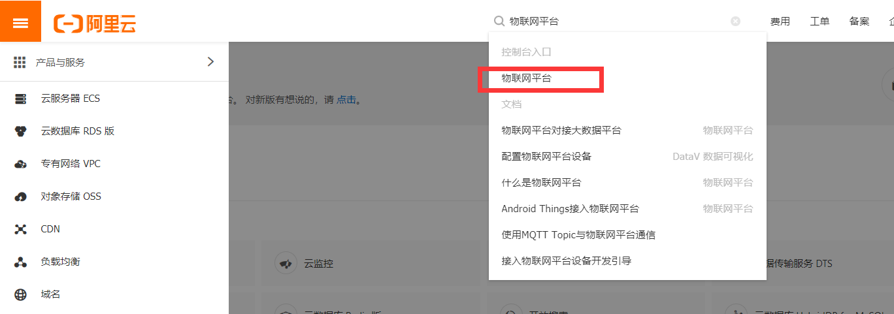

在阿里云上创建一个简单的产品和其下设备，并能使用mqtt.fx工具来测试对于此设备的topic的订阅和发布。
进入到aliyun官网，并注册一个账号。
在产品服务栏，进入到物联网平台。


创建一个产品，先有产品后有设备。

产品名称和分类可自定义。

点击产品可以看到其详细信息和可执行功能

接下来定义产品的功能：

进入到功能定义，并添加功能：

此时产品”温度获取服务”下添加了一个功能：“当前温度”

我们可以对其编辑：
比如我在这里将华氏温度改为了摄氏温度：

接下来在产品下创建一个设备


在这里我们选择刚才创建的产品，并在其下创建一个设备，因为我后面将进行的DS18B20的温度操作，这里创建了DS18B20设备，可随意设置。
创建完成后，会弹出提示框：

这些信息会在后面用到，可以先复制到文本中，当然也可以在设备信息里查看。


现在产品“温度获取服务下”有设备”DS18B20“，并对产品进行了一个功能的定义。此时我们就要测试该产品下的设备DS18B20的mqtt订阅和发布服务。
记下设备DS18B20下Topic列表下的发布和订阅栏。

此时我们记下的信息就有这些：
{
"ProductKey": "a17i4DkIYtW",
"DeviceName": "DS18B20",
"DeviceSecret": "uug19VsZveTVnQhpWAwoulzeQBXhz8TR"
}
订阅：/sys/a17i4DkIYtW/DS18B20/thing/service/property/set
发布：/sys/a17i4DkIYtW/DS18B20/thing/event/property/post
此时服务器端的配置已经完成，接下来就是使用mqtt工具来测试服务器端的功能。
下载mqtt.fx工具进行测试：
打开mqtt.fx软件：

profile Name可以随意设置，
域名的设置可以查看阿里云物联网平台文档：

查看地域的Region ID：

并在阿里云官网查看可用区：

这里只有上海可以使用。
再参考之前保存的一些信息。
所以域名的设置为：
域名（Broker Address): a17i4DkIYtW.iot-as-mqtt.cn-shanghai.aliyuncs.com
端口：1883
接下来设置client id，username和password：
参考阿里云物联网平台文档：

在这里，clientId，timestamp，signmethod都是我们自己设置的，而deviceName和deviceSecret是我们之前保存的信息。
所以这里的设置为：
clientid: 12345|securemode=3,signmethod=hmacsha1,timestamp=789|
用户名：
username: DS18B20&a17i4DkIYtW
密码:
在文档里clientid指明了signmethod为hmacsha1,即哈希sha1算法，productKey
此处使用的是mqtt.fx工具，并不能直接带入hmacsha1("...","...")
所以密码需要我们手动去算：

消息为：clientId12345deviceNameDS18B20productKeya17i4DkIYtWtimestamp789
密钥为：uug19VsZveTVnQhpWAwoulzeQBXhz8TR（这是之前保存的第三个信息）

计算结果即password：
password: 01dfcb6ae1f52db5bf37c7acd0875a8bcb0b36df
接下来在mqtt.fx设置中添加我们刚才推出的信息：

点击Ok，再点击connect：

灯变为绿色表示成功连接到阿里云服务器
我们在subscribe栏中订阅我们之前保存的话题（一定要点订阅）：

我们在阿里云服务器端进入到产品的在线调试，也可以由设备进入。

选择设备DS18B20


等一下，尴尬发现我们之前选择的“当前温度”选项只能自动获取温度，由于我们并没有获取温度到服务器上，所以每次发送的数据都为“{}”即空...
现在在产品“温度获取服务”下再创建一个功能--颜色状态：

我们再测试一下：

发送成功后，我们在接收端可以收到消息：

服务器实时日志显示消息发送成功
再进行发布测试，这里也要用JSON格式发送数据到服务器：
可以直接copy之前收到的数据,添加温度信息,记得逗号结尾：


点击publish，打开服务器产品下设备的运行状态，服务器接收到我们刚才发送的消息。

至此，测试完毕。接下来会研究aliyun的mqtt c-sdk提供的库函数编程实现消息到服务器产品设备的订阅和发布。
PS:
产品：

设备：

两者有相同的producekey,不同的secert，设备的ip地址为我们创建该设备时所在网络的公有ip，当有客户端连接到该设备时，设备才会在线，否则会一直处于离线状态。我们订阅和发布的消息的标识符可在产品的功能定义中找到。订阅和发布的主题的topic可在设备的topic列表找到，可以发布同一topic的一个或多个标识符数据，前提是该标识符存在，否则会出错。发布和订阅必须使用JSON格式，否则也会出错。